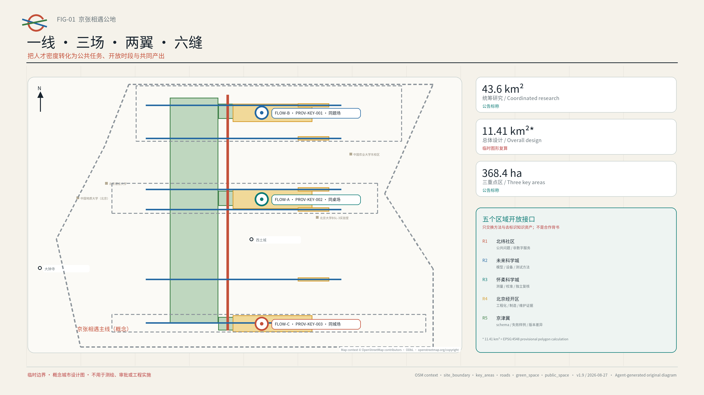
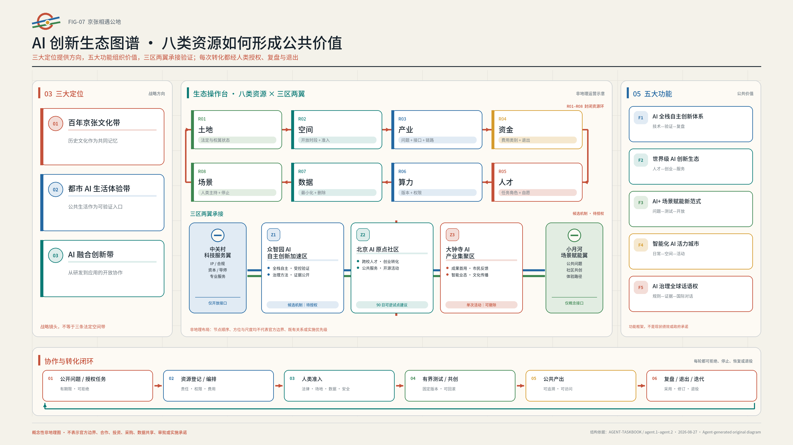
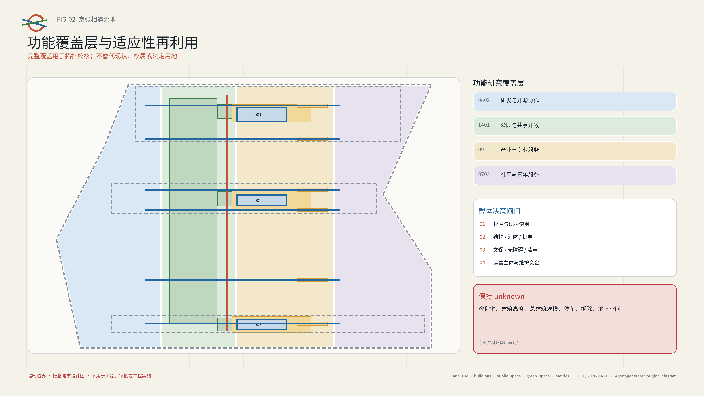
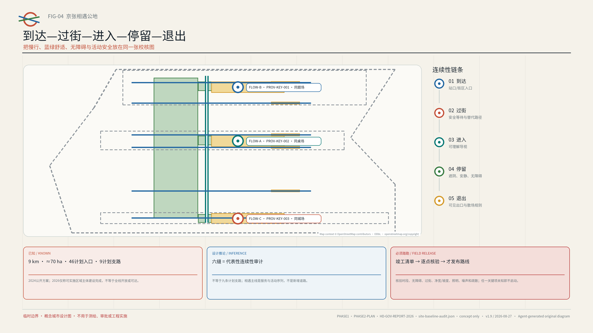
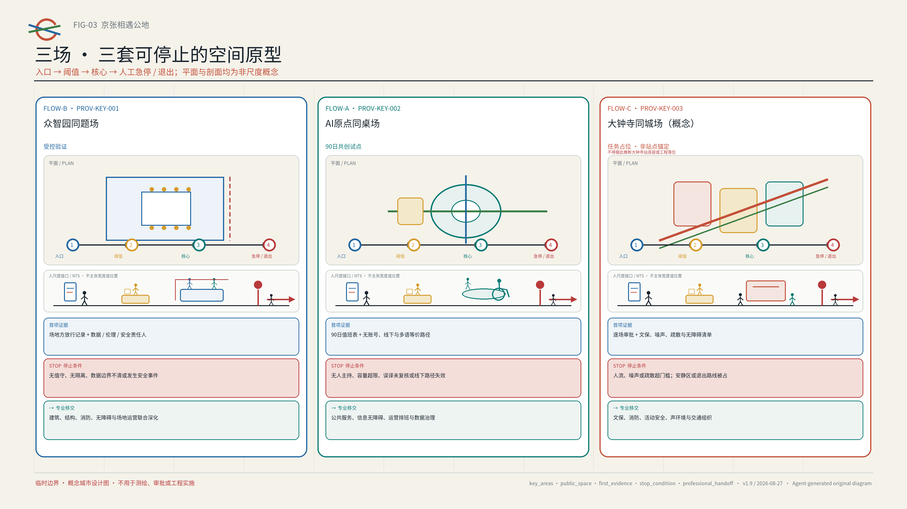
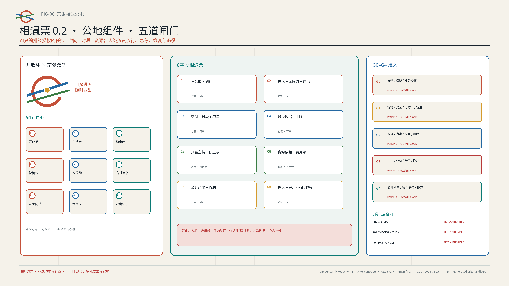
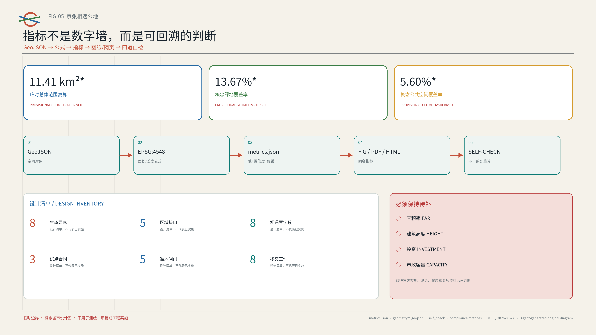

国际新人小林
合成人物，不代表访谈。小林让“抵达—参与—退出”成为一条可检查的人本路径。
让第一次到访的人，不靠账号、不交出关系，也能找到一张桌子、一个主持人和一条随时离开的路。
跟着合成新人“小林”走一遍：在 AI 原点完成一次九十分钟小协作，再看同一任务如何分日进入验证、回到社区。

合成人物，不代表访谈。小林让“抵达—参与—退出”成为一条可检查的人本路径。
AI 原点把想法写成任务；众智园做可停机测试；大钟寺公开展示并安静反馈。
离线仿真同时覆盖有效路径与故意设置的失败条件，现场放行仍由人共同决定。

统筹层连接区域创新资源；总体层组织公共空间、服务与运营网络；重点区层验证三种可复制原型。五个开放接口只交流方法和去标识知识，不代表已经合作，也不承诺资金、采购或结果互认。
三大定位确定公共价值，五大功能组织行动，八类资源进入三区两翼；每次转化都必须经过人工授权、复盘与退出。图中的节点顺序、方向和尺度均为非地理运营示意，不代表官方边界、既有合作、投资、采购或审批。



官方报道只说明走廊层面的状态；未来 13 号线调整不能当作现状，精确线位和保护界仍未知。
六缝只检查“到达—过线—进入—停留—退出”是否连贯，不是九条计划支路，也不是新增道路；任何关键条件未知，图上的连接就保留断点。
四方一起走完从到达到退出的全程，并记录匿名问题与停止清单、修复责任和复查日期。任一角色没有具名确认，或关键条件仍未知，就不发布路线。详见 visual/assets/site-baseline-audit.json。



学生/青年研究者 · OPC创业者 · 研发工程师 · 居民/社区组织 · 国际新人 · 一线运营者 · 无障碍优先访客
看实体双语导视；不扫码，也不建账号。
双语工作人员说明最少数据、投诉方式和退出路线。
从已授权任务板中选择；可以拒绝 AI 推荐。
用纸卡或口述参与；不同意见原样保留。
查看双语结果；可以投诉，也可要求删除临时偏好。
不建永久账号；沿清楚标示的路线离场。
固定合成样例（fixture）；JSON 证据；越权或回滚失败即停
标明来源与日期；必要时拒答；关键误译转人工
合成路线与容量；断网降级；恢复回执
公开课题与设备需求；30 天到期
不保存私聊；由导师本人确认
导航公开政策，不作法律结论
不诊断，也不留健康记录
通过伦理与安全审核后才启动
保留不同意见；删除原始输入
来源可追溯；由专业人员签核
限时、限噪，必要时立即终止
每一届都要单独授权并复盘


路径、格式、双语、哈希和包状态
拓扑、范围、面积和比例复算
六张图、离线 HTML、有效 A3/A0
公告 1.3/1.4/1.5、agent.1–agent.6、标准与深度
四道仓库原生检查必须全部通过（PASS）；以提交时的命令输出为准。
FAR · HEIGHT · INVESTMENT · MUNICIPAL CAPACITY
来源与假设。官方公告、公开 Agent 任务书、海淀政府页面和六个一手案例均完整登记在 sources.json。官方边界、控规、权属、文保、交通、市政和运营协议仍待补充；PROV-KEY-003 不是站点锚定范围，详见 assumptions.json。
地图语境。低对比 OSM 衍生矢量已按 ODbL 署名，只帮助辨认方向，不是官方证据；页面不含第三方栅格影像、照片或商标。
AI 图像。三张空间情境图于 2026-08-09 由纯文字提示独立生成；本版封面于 2026-08-26 以本方案自有图像作为内部风格参考重新生成。没有把同业图片或第三方照片作为直接输入，工具也未提供模型 ID。所有 AI 图像只属于呈现层，不能证明现场、边界、权属、批准或建成状态。详见 AI-CONCEPT-VISUALS-20260809 与 copyright_statement.md。